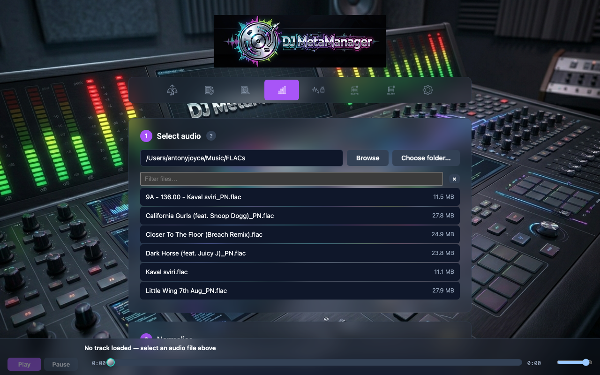
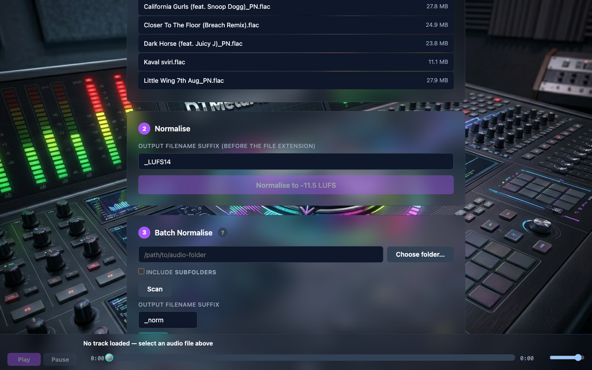

Normalise
The Normalise tab measures an existing audio file, then applies two-pass EBU R128 loudness correction toward your Settings integrated LUFS and true-peak targets. Output is written in the same extract format as Settings (FLAC, MP3, or AAC/M4A), with tags and artwork copied from the source.
Why normalise?
DJ libraries often mix material mastered at different levels. Consistent perceived loudness reduces surprise gain rides in a set. DJ MetaManager uses industry-standard loudnorm measurements rather than simple peak normalisation.
FLAC output specifics
When output is FLAC, the app prefers the official flac encoder if installed for best compression; otherwise it uses FFmpeg’s FLAC encoder. Outputs are 16-bit at the source sample rate and channel layout (e.g. stereo 48 kHz stays 48 kHz). A normalised file can be larger than the source at the same bit depth because reshaping the waveform can reduce encoder efficiency—that is expected and still lossless.
MP3 and AAC
Lossy formats are re-encoded after loudness processing. Choose targets that match how you want your library to behave in loudness-aware DJ software.
Workflow
- Browse to a folder and select a supported file (same family as Fix/Inspect).
- Run analyse to view integrated LUFS and peak.
- Set an output suffix if desired (default resembles
_LUFS14style). - Run Normalise and confirm the new file beside the source (or as documented in the UI).
- Use the bottom audio preview bar to audition the selected file before or after normalisation (Play/Pause, seek, no autoplay)—see Fix & Inspect for behaviour details.

13-normalise-analyse.png).
14-normalise-suffix-output.png).Extract can also normalise during capture. Reference lists supported formats.